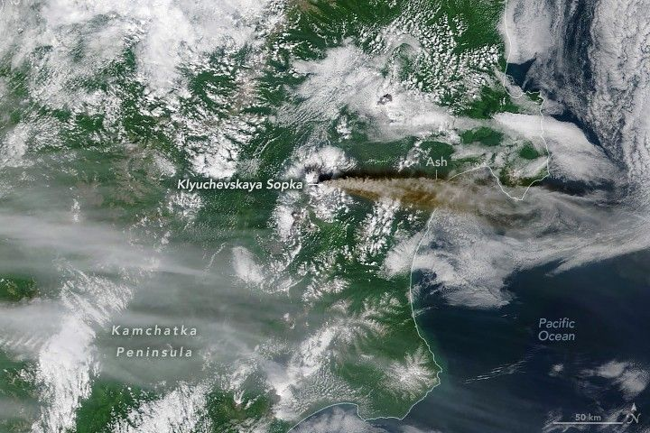

Ash Streams from Klyuchevskaya Sopka
Of the 29 active volcanoes on Russia’s Kamchatka Peninsula, the tallest and most active is a basaltic stratovolcano called Klyuchevskaya Sopka (also Klyuchevskoy). Since it formed about 7,000 years ago, the remote volcano has routinely generated both explosive and effusive eruptions with only occasional intervals of calm. The most recent period of heightened activity began in April 2025, when satellites detected increasing numbers of thermal anomalies and the Kamchatka Volcanic Eruption Response Team (KVERT) reported sustained Strombolian explosions and lava fountains. On July 31, KVERT reported a new lava flow on the western slope of the volcano, accompanied by volcanic mudflows called lahars and powerful steam-driven explosions. The volcano emitted large ash plumes, visible in NASA satellite imagery, between August 4 and August 13. When the MODIS (Moderate Resolution Imaging Spectroradiometer) sensor on NASA’s Terra satellite acquired this image on August 8, 2025, ash streamed east toward Alaska and rose as high as 9 kilometers (30,000 feet) above sea level, according to KVERT. Volcanic ash consists of small, jagged particles that can damage aircraft. Satellite observations are a key source of information used by forecasters at ash advisory centers around the world to issue warnings that help prevent ash-related aviation incidents. With ash from Klyuchevskaya Sopka reaching heights between 5 and 10 kilometers, the Anchorage Volcanic Ash Advisory Center issued code red aviation warnings to pilots on several occasions in August. The warnings prompted airlines to cancel flights to communities in western Alaska, including Nome, Kotzebue, and Utqiaġvik, according to news reports. The intensification of volcanic activity in late July and early August coincided with an 8.8 magnitude earthquake that forcefully shook the peninsula on July 29 and displaced the crust by several meters in some areas. Though the volcano was already showing signs of unrest before the earthquake, some geologists think the earthquake may have rattled Klyuchevskaya in ways that amplified the eruption. “A really large earthquake rearranges stress patterns locally and perhaps regionally, and the shaking can break things loose within a volcanic system,” explained Ashley Davies, a volcanologist at NASA’s Jet Propulsion Laboratory. However, magma must already be in the system and under pressure in a storage area, he added. “Then an earthquake might provide the final impetus,” he said, perhaps by creating a fault that opens a conduit to the surface or agitating the magma. Patrick Whelley, a University of Maryland planetary volcanologist based at NASA’s Goddard Space Flight Center, agreed that in the short term, an earthquake could “help along an eruption that was building anyway.” But, he added, “there is little evidence that large earthquakes, like Kamchatka just had, wake up volcanoes or directly lead to an increase in volcanic activity.”